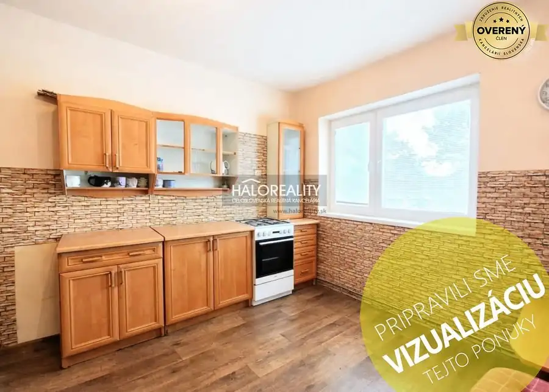
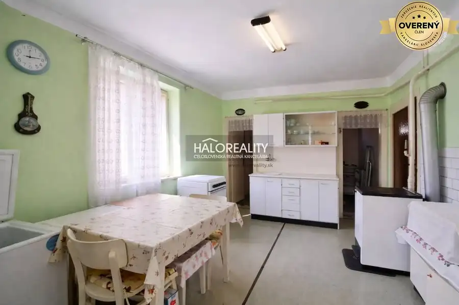
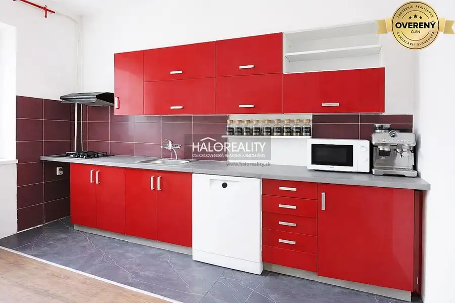
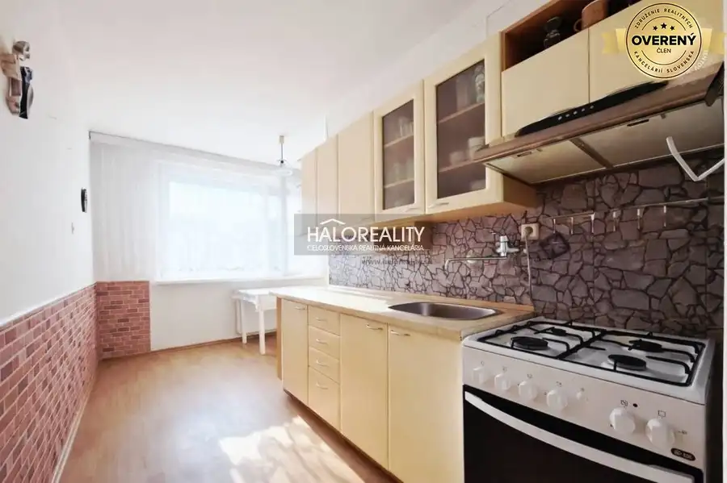
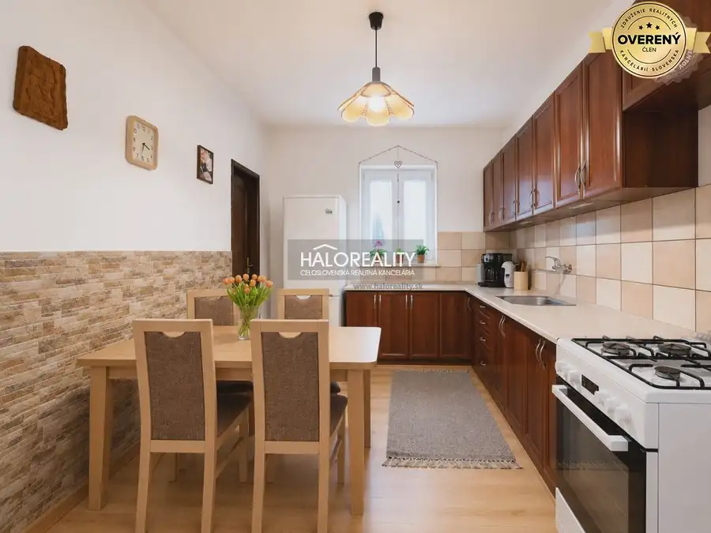

Aktuálna ponuka
Nehnuteľnosti, ktoré ponúkam
9 nehnuteľností na predaj a prenájom. Vyberte typ, alebo napíšte lokalitu.
9 z 9 ponúk
 Rodinné domy9
87 990 €Predaj, rodinný dom Zemné, štvorizbový, dvojpodlažný
Zemné
4-izbový160 m²
Ponúkame Vám na predaj 4-izbový poschodový rodinný dom v obci Zemné. Rodinný dom s úžitkovou plochou 160m2 sa rozprestiera na krásnom rovinatom…
Rodinné domy9
87 990 €Predaj, rodinný dom Zemné, štvorizbový, dvojpodlažný
Zemné
4-izbový160 m²
Ponúkame Vám na predaj 4-izbový poschodový rodinný dom v obci Zemné. Rodinný dom s úžitkovou plochou 160m2 sa rozprestiera na krásnom rovinatom…
 Rodinné domy9
98 990 €Predaj, rodinný dom Kolárovo, štvorizbový, čiastočná...
Kolárovo
4-izbový1 m²
Ponúkame Vám na predaj štvorizbový rodinný dom po čiastočnej rekonštrukcii v meste Kolárovo. Rodinný dom so zastavanou plochou 128 m2 sa rozprestiera…
Rodinné domy9
98 990 €Predaj, rodinný dom Kolárovo, štvorizbový, čiastočná...
Kolárovo
4-izbový1 m²
Ponúkame Vám na predaj štvorizbový rodinný dom po čiastočnej rekonštrukcii v meste Kolárovo. Rodinný dom so zastavanou plochou 128 m2 sa rozprestiera…
 Rodinné domy9
105 990 €Predaj, rodinný dom Tvrdošovce, štvorizbový, čiastoč...
Tvrdošovce
4-izbový100 m²
Ponúkame Vám na predaj štvorizbový rodinný dom po čiastočnej rekonštrukcii v obci Tvrdošovce. Rodinný dom so zastavanou plochou 125 m2 sa…
Rodinné domy9
105 990 €Predaj, rodinný dom Tvrdošovce, štvorizbový, čiastoč...
Tvrdošovce
4-izbový100 m²
Ponúkame Vám na predaj štvorizbový rodinný dom po čiastočnej rekonštrukcii v obci Tvrdošovce. Rodinný dom so zastavanou plochou 125 m2 sa…

Rodinné domy9 76 900 €Predaj, rodinný dom Pribeta, päťizbový, dvojpodlažný... Pribeta 5-izbový200 m² Ponúkame Vám na predaj dvojpodlažný 5-izbový rodinný dom v obci Pribeta, ktorý sa rozprestiera na rovinatom pozemku o rozlohe 864 m2. DISPOZÍCIA:…
Rodinné domy9 38 000 €Predaj, rodinný dom Pribeta, dvojizbový, pôvodný stav Pribeta 2-izbový90 m² Ponúkame Vám na predaj 2-izbový rodinný dom v Pribete, ktorý je situovaný na pozemku s rozlohou 1255m2. Nehnuteľnosť je v pôvodnom stave, čo umožňuje…
Rodinné domy9 149 900 €Predaj, rodinný dom Hul, päťizbový, čiastočná rekonš... Hul 5-izbový220 m² Ponúkame Vám na predaj priestranný 5-izbový rodinný dom po čiastočnej rekonštrukcii v obci Hul, ktorý sa rozprestiera na rovinatom oplotenom pozemku…
Byt9 103 000 €Predaj, dvojizbový byt Nové Zámky, priestranný, pôvo... Nové Zámky 2-izbový64 m² Ponúkame Vám na predaj 2,5 izbový byt v pôvodnom stave s rozlohou 64,15 m2, ktorý sa nachádza na 3. poschodí zatepleného bytového domu s výťahom…
Rodinné domy9 97 000 €Predaj, rodinný dom Nesvady, trojizbový, čiastočná r... Nesvady 3-izbový90 m² Ponúkame Vám na predaj 3 izbový rodinný dom so zastavanou plochou 110m2 v meste Nesvady, ktorý je situovaný na rovinatom oplotenom pozemku o rozlohe… Rodinné domy9
98 000 €Predaj, rodinný dom Svodín, štvorizbový na priestran...
Svodín
4-izbový220 m²
Ponúkame Vám praktický, dobre dispozične riešený 4-izbový dvojpodlažný rodinný dom so zastavanou plochou 144m2 situovaný na rozsiahlom pozemku o…
Rodinné domy9
98 000 €Predaj, rodinný dom Svodín, štvorizbový na priestran...
Svodín
4-izbový220 m²
Ponúkame Vám praktický, dobre dispozične riešený 4-izbový dvojpodlažný rodinný dom so zastavanou plochou 144m2 situovaný na rozsiahlom pozemku o…
Tomuto výberu zatiaľ nezodpovedá žiadna ponuka. Napíšte mi, čo hľadáte.